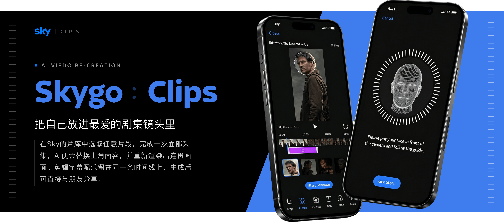
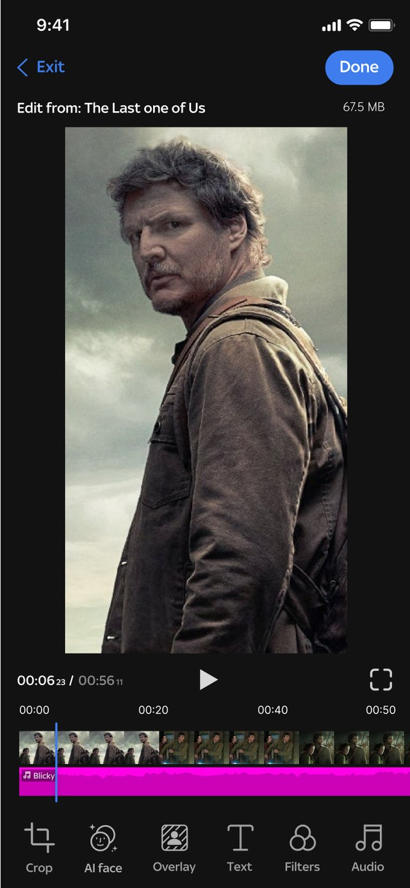
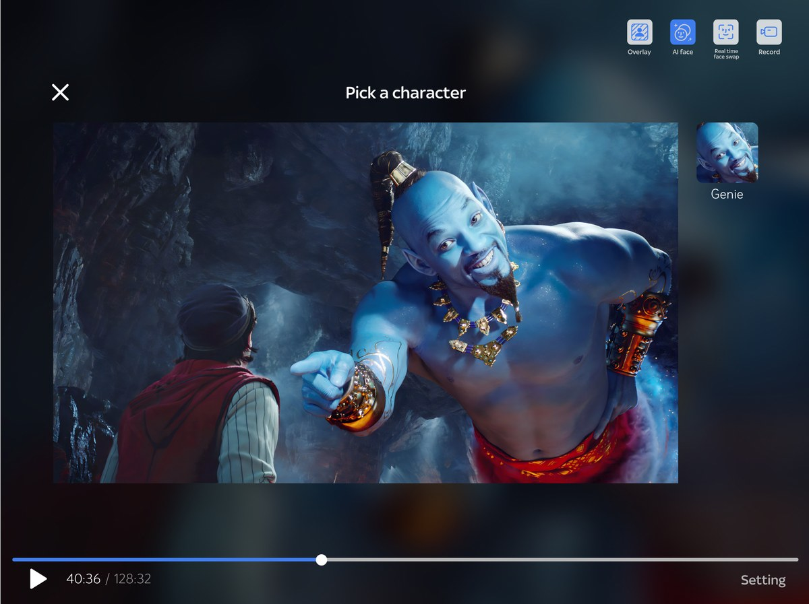
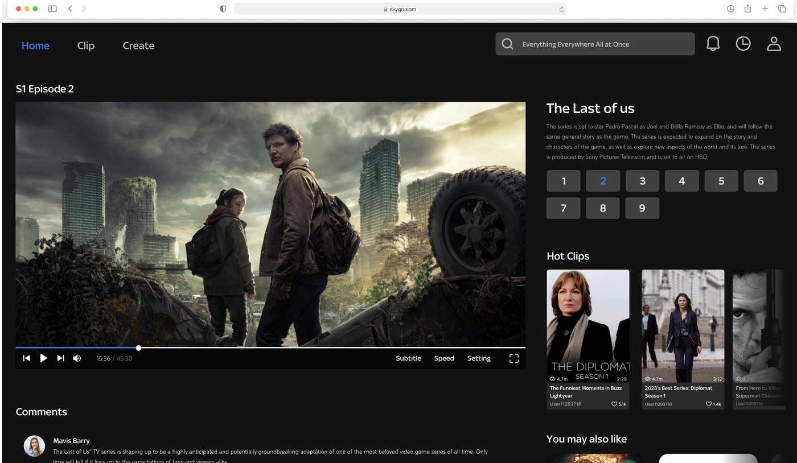

为流媒体平台设计的短视频创作链路——让看剧的人成为创作者。把创作入口放回观看现场，用模板与 AI 特效把「想拍」到「发出去」压缩成一条顺畅的路。
SKY GO 是英国流媒体平台 Sky 的移动端产品。这个课题探索的是：当用户看完一部剧、情绪正浓的时候，怎么让他顺手把这份感受做成一条短视频发出去——也就是把「中长视频的观看」和「短视频的创作」接成一个闭环。
目标用户是 Z 世代的流媒体重度用户。他们看完一部剧后有两个诉求：想看到别人围绕这部剧做的衍生内容，也想自己做一条——但前提是「这件事得足够容易，人人都能发」。对着第一版走一遍流程，问题集中在三处。
三条措施合起来是一个环：在观看页触发创作，用简易编辑器完成合成，发布时标注剧集 Tag，这条视频又回到剧集页面被下一个人看到——看剧的人变成创作者，创作的内容再把人带回剧集。
这是我在项目里独立负责的部分：重做从导航栏进入的完整创建链路。原则只有一条——目标用户是看剧的人，不是剪辑师，每一步能省则省，省不掉的就用模板和 AI 顶上。
SKY GO 不只是一个手机 App。同一套创作与观看体验要在三种断点下都站得住——平板端横屏观看时把编辑入口收进顶部图标栏，桌面端则展开成完整的网页布局，播放器、剧集选集与热门短视频并排陈列。



这两组对比是我最想拿出来讲的部分——它们展示的不是执行，是判断：为什么第一版看起来没错，但对这个产品是错的。
视频编辑界面
内容模式不同，就不能照抄交互第一版沿用了 Instagram、抖音那套「举起手机拍」的记录式设计，把即时拍摄放在最显眼的位置。但 SKY GO 的内容基础是影视片段，不是用户自己的生活——素材本来就在 App 里，让人举起手机反而走错了方向。所以我把即时拍摄按钮挪走，整合功能，做成一个围绕已有片段的简易编辑器。
影视剧集详情界面
把终点改成枢纽第一版的详情页只装影视本身的信息：评分、剧集、演员。它是一个终点——看完就没有下一步了。改版把短视频和剧集信息并置，拆出 Episodes / Comments / Clips 三个分栏，用户可以从详情页直接进到衍生短视频。详情页从终点变成了枢纽，闭环也是在这一步真正合上的。
沿用 Sky 的品牌蓝并向暗色环境适配：深色底保证影视画面是屏幕上最亮的东西，蓝色只用在可操作元素上，让「哪里能点」在一片剧照里始终清晰。
这个项目没有上线，也就没有任何数据能证明这些判断是对的。与其在这里放一组不存在的指标，不如把缺口写清楚——以及如果重做一次，我会先补哪几件事。